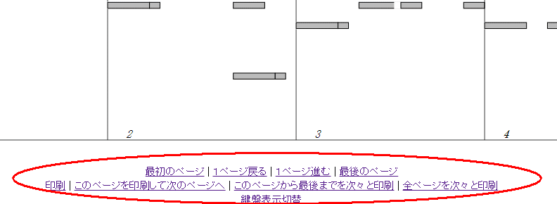
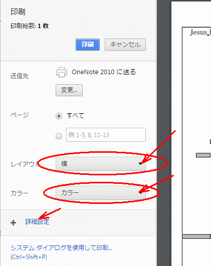
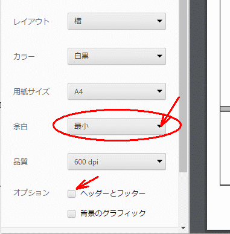

印刷の方法
Google Chromeでブックを開く。
ブックのページの下部のリンクからページ移動や印刷を行う。

初回は、印刷条件の設定を行う。
用紙は横向き、色は白黒、詳細設定を開く

余白は最小、ヘッダ・フッタのチェックを外しておく

これで、原寸で印刷できると思います。わからないことがあったら何なりと連絡ください。
曲目一覧
MuseScoreで作成した楽譜から自動でブック切抜きパターンを作成する方法